AAA (Authentication, Authorization, and Accounting)
Security framework that verifies who you are, what you can access, and logs what you did on a network or system.
23 exam acronyms starting with letters A–C.
Security framework that verifies who you are, what you can access, and logs what you did on a network or system.
.png)
Ruleset that specifies which users or systems are allowed or denied access to a resource such as a file, folder, or network.
Printer/scanner tray that feeds multipage documents automatically so you do not have to place each sheet on the glass.

Widely used symmetric encryption algorithm that protects data at rest and in transit with strong, standardized ciphers.
CPU and GPU manufacturer whose processors and graphics chips compete with Intel and NVIDIA in PCs and servers.
Wireless network device that lets Wi-Fi clients connect to a wired LAN or the internet.
Modern Apple disk file system optimized for SSDs, with strong encryption, snapshots, and space sharing on macOS and iOS.
Windows feature that assigns a 169.254.x.x address when DHCP fails so the host can still talk on the local link.
CPU architecture used in phones, tablets, and many laptops that emphasizes efficiency with a reduced instruction set.
Common PC motherboard and power-supply form factor that defines board size, mounting holes, and connector layout.
.png)
Organizational rules describing allowed and prohibited uses of company computers, networks, and internet access.
.webp)
Social-engineering fraud where attackers impersonate executives or vendors by email to steal money or data.

Legacy firmware that initializes hardware at power-on and starts the boot process before the OS loads.
Coaxial connector with a twist-lock bayonet coupling, historically used on older network and video cabling.
.png)
Windows stop-error screen shown when the OS encounters a critical fault it cannot recover from safely.
.png)
Policy that lets employees use personal phones or laptops for work, usually managed with MDM and security controls.

Smart-card style credential used to authenticate users for secure access in government and enterprise environments.
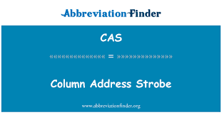
Memory timing signal related to how DRAM columns are addressed; often discussed with RAM latency (CAS latency).
Microsoft file-sharing dialect of SMB that lets clients access networked files and printers over TCP/IP.
Central inventory of IT assets and their relationships used for change, incident, and asset management.
Low-power chip technology; in PCs it often refers to the battery-backed chip storing BIOS/UEFI settings.
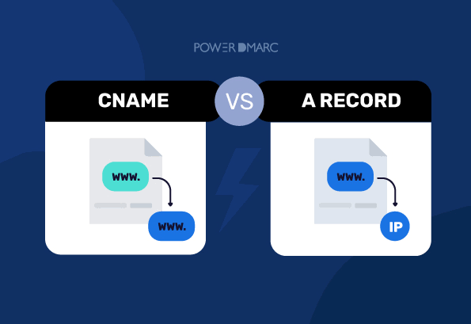
DNS record that aliases one hostname to another canonical hostname.
Primary processor that executes program instructions and performs most computing work in a device.
26 exam acronyms starting with letters D–F.
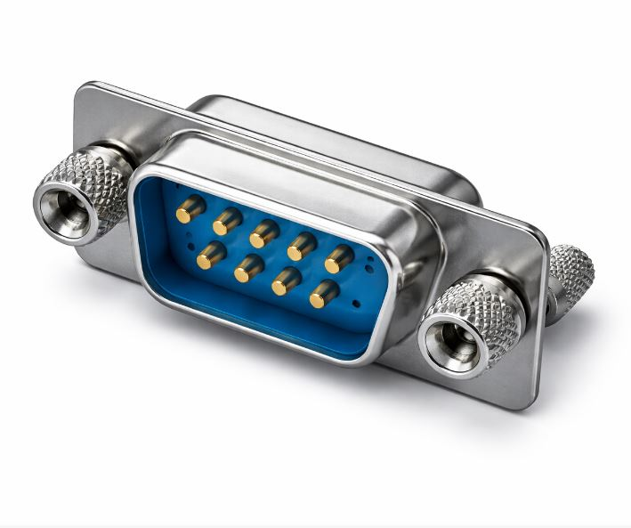
Nine-pin D-sub serial connector historically used for RS-232 devices, consoles, and older peripherals.
.png)
Attack that floods a target from many compromised systems to overwhelm availability of a service.
Memory technology that transfers data on both clock edges, used in successive generations of RAM modules.
Network service that automatically assigns IP addresses and related settings to clients.
Standard stick form factor for desktop and server RAM with contacts on both sides of the module.

Email authentication method that signs outbound messages so receivers can verify the sending domain.
.png)
Security controls that detect and block unauthorized transfer or leakage of sensitive data.
Email policy framework that builds on SPF/DKIM and tells receivers how to handle failed authentication.

Internet directory that resolves human-readable names to IP addresses and related records.
.jpg)
Attack that makes a system or network unavailable by exhausting resources or crashing a service.
Technology that restricts how digital media or software can be copied, shared, or used.
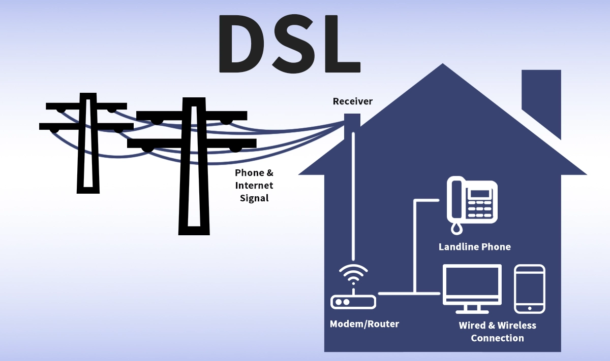
Broadband internet technology that delivers data over telephone copper lines.
Video connector standard used to link computers to monitors, supporting digital (and sometimes analog) signals.
Memory feature that detects and corrects bit errors, common in servers for higher reliability.
.jpg)
Security platform that monitors endpoints for threats and supports investigation and remediation.

Windows feature that encrypts individual files and folders with user-tied keys.
Point when a product no longer receives updates or vendor support and should be replaced or mitigated.
External SATA interface for connecting outside hard drives at SATA speeds.
Sudden static electricity surge that can damage sensitive electronic components during handling.
Software-based SIM built into a device that can be provisioned without a physical SIM card.
Legal contract defining the terms under which a user may install and use software.
Microsoft file system designed for flash media with large file support across Windows, macOS, and more.
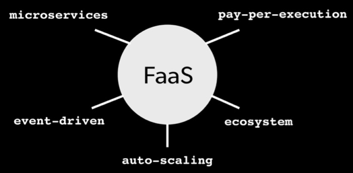
Cloud model that runs event-triggered code functions without managing servers (serverless).

Older widely compatible file system with a 4 GB per-file size limit, still used on USB drives.
.png)
Biometric method that identifies or unlocks devices by analyzing facial features.
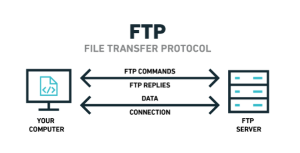
Classic protocol for uploading and downloading files; often replaced by SFTP for security.
23 exam acronyms starting with letters G–I.
Backup rotation scheme that keeps daily, weekly, and monthly copies on a staggered schedule.

Satellite navigation system that provides location and time data to GPS receivers.

Modern disk partitioning scheme that supports large disks and many partitions, replacing MBR limits.
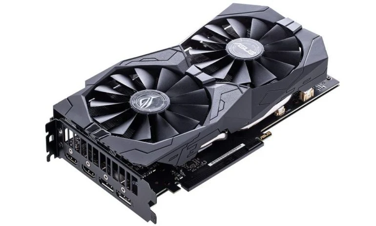
Processor specialized for rendering graphics and accelerating parallel workloads like video and AI.
Visual interface of windows, icons, and menus that users interact with instead of pure text commands.

128-bit unique ID used to identify software objects, partitions, and other entities without collision.
Video quality standard with higher resolution than standard definition (commonly 720p or 1080p).
.png)
Magnetic spinning-disk storage device used for bulk data storage at lower cost per gigabyte.
Digital audio/video connector that carries uncompressed video and multi-channel audio to displays.

Tamper-resistant device that generates and stores cryptographic keys for high-security operations.
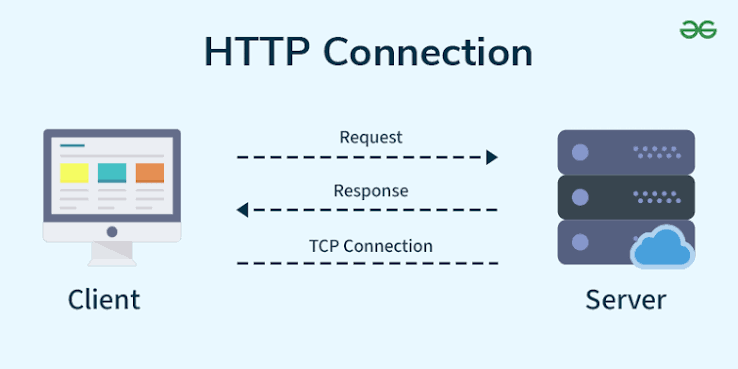
Application protocol that transfers web pages and API data between browsers and servers (unencrypted).
HTTP wrapped in TLS encryption to protect web traffic confidentiality and integrity.
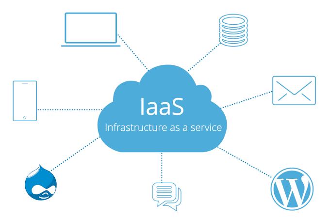
Cloud model that rents virtual servers, storage, and networking for customers to configure.
.png)
Policies and tools that control user identities, authentication, and access rights across systems.
Email protocol that keeps messages on the server and syncs mailboxes across multiple devices.
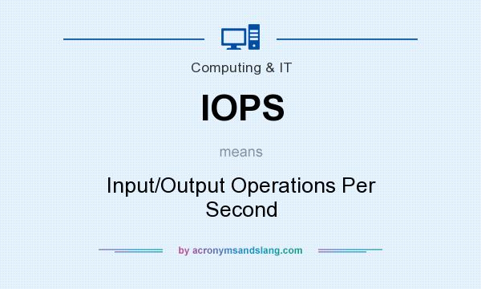
Performance metric measuring how many read/write operations a storage device can handle per second.
Network of everyday devices (sensors, appliances, cameras) connected to the internet for data and control.
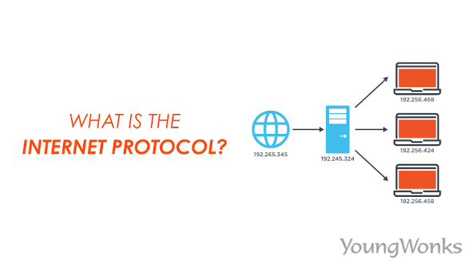
Core network protocol that addresses and routes packets between hosts on an IP network.
LCD panel technology known for wide viewing angles and accurate colors compared with TN panels.
Wireless line-of-sight communication or sensing using infrared light, used in remotes and some sensors.

Standards body; also casually used for disk image files (.iso) that mirror optical media.
Company that provides customers with internet connectivity and related services.
Smaller motherboard form-factor family (such as Mini-ITX) for compact PCs.
18 exam acronyms starting with letters J–M.
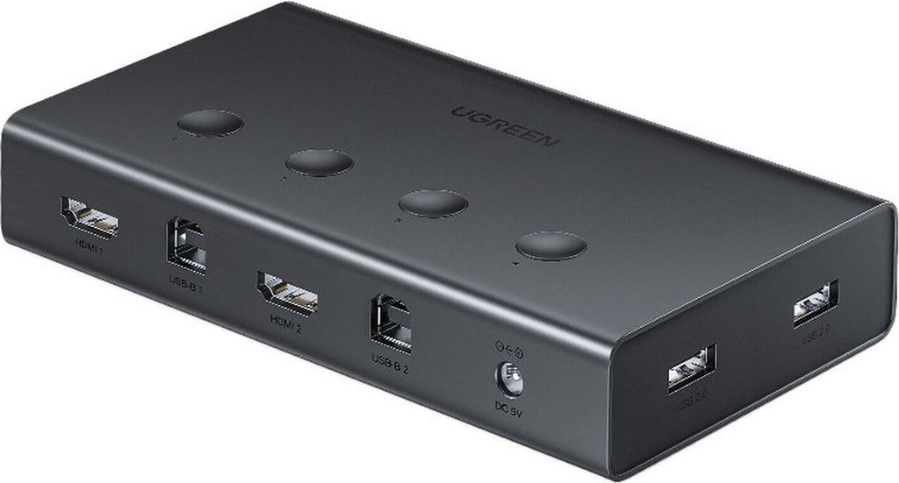
Switch or device that lets one keyboard, mouse, and monitor control multiple computers.
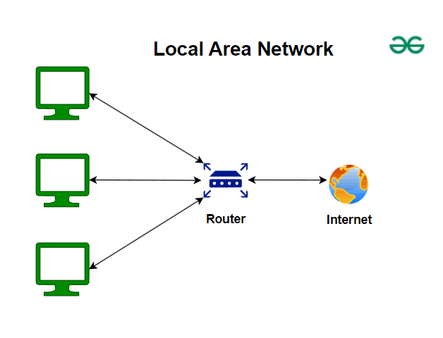
Network covering a limited area such as a home, office, or building.
Small form-factor fiber-optic connector commonly used in high-density network installations.
Flat-panel display technology that uses liquid crystals and a backlight to form images.

Protocol for querying and managing directory services such as user accounts and groups.
Semiconductor light source used for indicators, lighting, and modern display backlights.
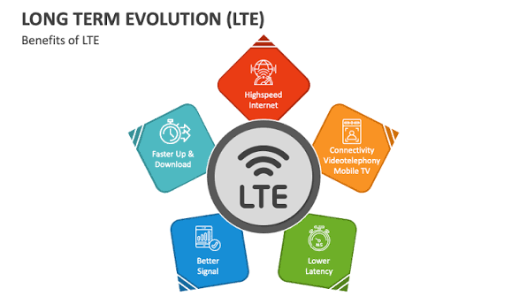
High-speed cellular wireless standard commonly known as 4G LTE mobile data.
Hardware address uniquely identifying a network interface on a local network segment.
Network spanning a city or campus, larger than a LAN but smaller than a WAN.

Legacy disk boot sector and partitioning scheme limited to four primary partitions and 2 TB disks.
.jpg)
Enterprise software that configures, secures, and remotely manages smartphones and tablets.
.jpg)
Outsourced security service that monitors for threats and helps respond to incidents.
.png)
Login requirement that combines two or more factors (something you know, have, or are).
Office device that combines printing, scanning, copying, and often faxing in one unit.
Windows shell that hosts administrative snap-ins such as Device Manager and Event Viewer tools.

Contract where both parties agree to keep shared confidential information secret.
Compact SATA connector/form factor used for small SSDs in laptops and embedded systems.
DNS record that tells senders which mail servers accept email for a domain.
31 exam acronyms starting with letters N–P.
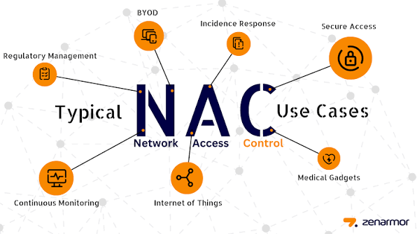
Security approach that authenticates and checks devices before granting network access.
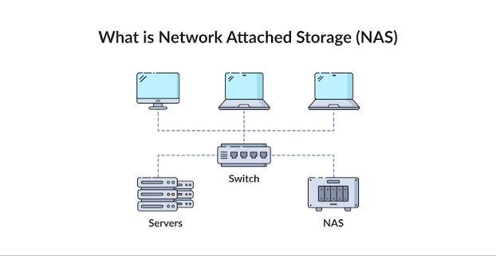
Device or service that authenticates remote users and grants them access to network resources.
Router technique that maps private internal IPs to public addresses for internet access.
Legal contract requiring one or more parties not to reveal confidential information.
Legacy Windows networking API/name service used historically for local name resolution and shares.
.webp)
Short-range wireless tech for payments, pairing, and data exchange within a few centimeters.
Hardware adapter that connects a computer to a wired or wireless network.

Default Windows file system supporting permissions, encryption, compression, and large volumes.

Protocol that synchronizes device clocks with authoritative time servers.
High-speed SSD interface protocol designed for PCIe flash storage with low latency.
Company that builds hardware or software sold under another brand or bundled with systems.
Display technology where each pixel emits its own light, enabling deep blacks and high contrast.
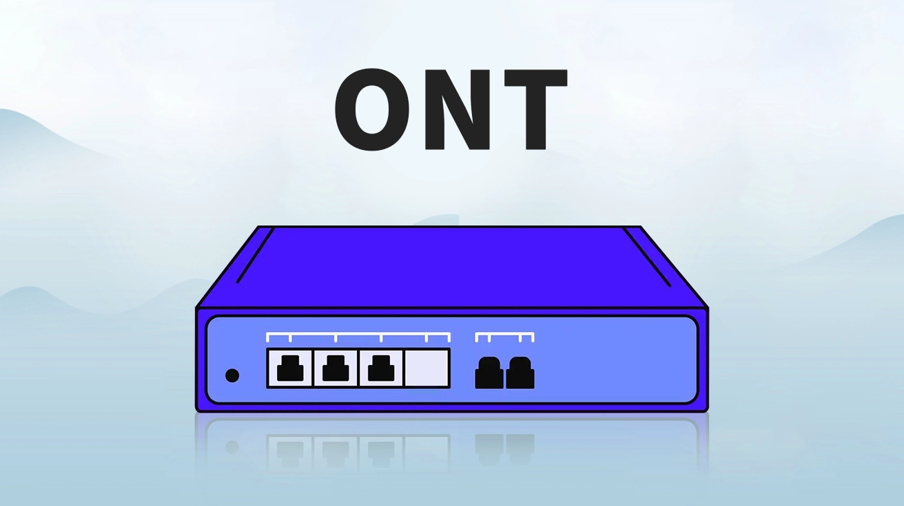
Fiber-to-the-premises device that converts optical signals to Ethernet for home or business use.
Core software that manages hardware, processes, memory, and provides services for applications.
.png)
Single-use code used for authentication, often delivered by app, SMS, or hardware token.
Cloud model that provides a managed runtime platform so developers deploy apps without managing OS infrastructure.
.png)
Controls that secure, monitor, and limit use of powerful admin accounts and credentials.
Very short-range network around a person, such as Bluetooth between phone and headset.
General-purpose computer designed for individual use, such as a desktop or laptop.
Older parallel expansion-bus standard for adding cards to a motherboard.
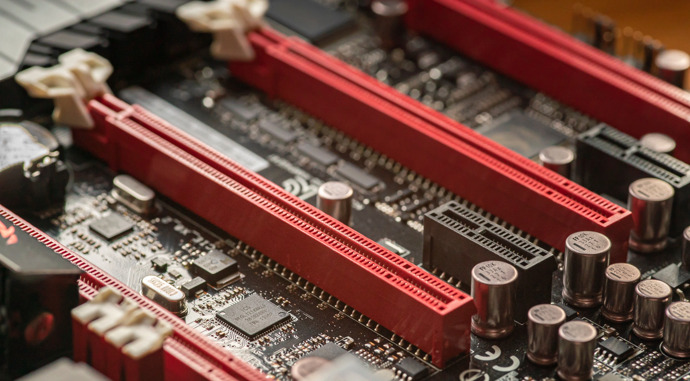
Modern high-speed serial expansion bus used for GPUs, NVMe SSDs, and add-in cards.
HP page-description language that tells printers how to render text and graphics.

Data that can identify an individual, such as name, SSN, or email, requiring careful protection.
Numeric secret used to authenticate a user, often with a card, phone unlock, or smart card.
U.S. federal smart-card standard for employee identity and strong authentication.
Technology that delivers electrical power and data over the same Ethernet cable to devices like APs and cameras.
Email retrieval protocol that typically downloads messages to a client and may remove them from the server.
Firmware diagnostic sequence that checks critical hardware before the OS boots.
Component that converts wall AC power into the DC voltages a computer needs.
.jpeg)
Software that is not outright malware but is undesirable (adware, toolbars, bundled junk).

Network boot technology that lets a PC load an OS installer or image from a server.
14 exam acronyms starting with letters Q–R.
Networking techniques that prioritize certain traffic (voice, video) for better performance.
Centralized AAA protocol commonly used for VPN, Wi-Fi, and network device authentication.
Disk configuration that combines drives for performance, capacity, and/or fault tolerance.
Volatile working memory the CPU uses to store running programs and data.

Microsoft protocol that provides remote graphical desktop access to Windows systems.

Microsoft file system focused on integrity and resilience for large volumes and storage spaces.

Wireless ID technology using tags and readers for access control, inventory, and tracking.
Additive color model used by displays and lighting where colors are mixed from red, green, and blue.
CPU design philosophy using a smaller, simpler instruction set for efficiency (as in ARM).
Telephone connector typically used for landline/DSL with fewer contacts than RJ45.
Eight-position modular connector used for Ethernet networking cables.

MSP platform used to monitor, patch, and manage many client endpoints from one console.
Speed measurement for spinning devices such as HDD platters or cooling fans.
Fast security update mechanism (notably Apple) that delivers urgent fixes outside major OS releases.
36 exam acronyms starting with letters S–T.
Cloud model delivering applications over the internet (e.g., Microsoft 365, Google Workspace).
.png)
XML-based standard for exchanging authentication/authorization data, often used for SSO.

High-speed dedicated network that provides block-level storage to servers.
Enterprise disk interface that connects servers to high-reliability SAS drives.
Common interface for connecting internal HDDs and SSDs to a motherboard.
Square push-pull fiber-optic connector used in networking and telecom.
Industrial control system used to monitor and operate infrastructure like plants and utilities.
Legacy/enterprise peripheral interface for disks and other devices; ancestor concepts live on in SAS.
Removable flash memory card format used in cameras, phones, and embedded devices.
Document listing hazards, handling, and disposal guidance for a chemical or material (formerly MSDS).
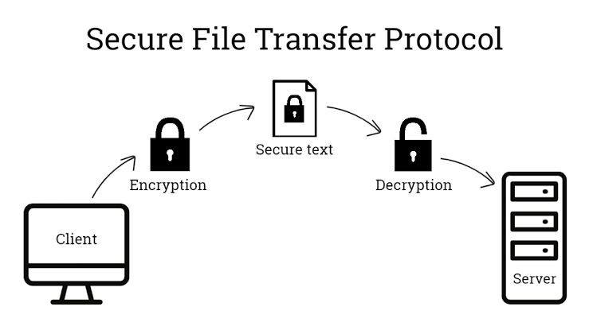
Encrypted file transfer method that runs over SSH instead of plaintext FTP.
Card that stores mobile subscriber identity and authentication data for cellular service.
.png)
Contract defining expected service performance, uptime, and response times between provider and customer.
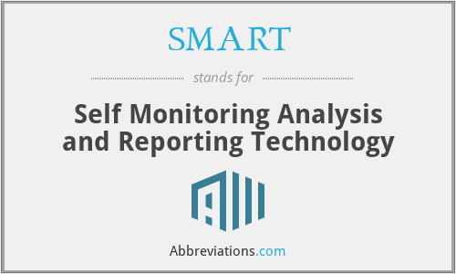
Drive self-diagnostics that report health metrics to warn of impending disk failure.
Windows file-and-printer sharing protocol used for networked resources.
.png)
Cellular text messaging service used for communication and sometimes OTP delivery.
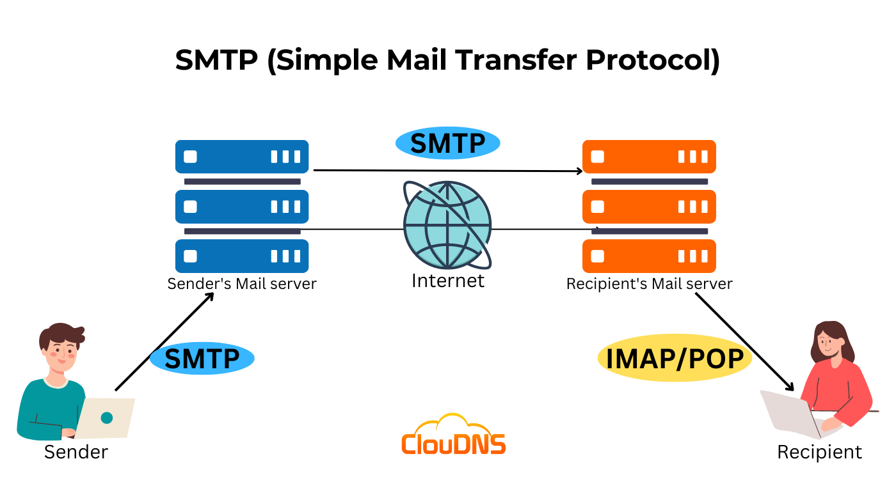
Protocol that sends email between mail clients and mail servers.
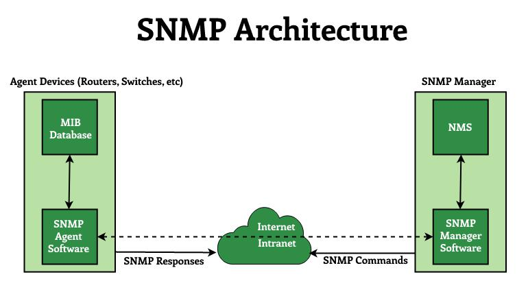
Protocol for monitoring and managing network devices such as switches, routers, and printers.
Compact RAM module form factor used in laptops and small-form-factor systems.
Small business/home work environment with simpler networking and fewer users than enterprise.
.webp)
Documented step-by-step process for performing a routine IT or business task consistently.
Email DNS record that lists servers authorized to send mail for a domain.

Remote-display protocol optimized for accessing virtual machines with graphics and clipboard sharing.
.jpg)
Standard language for querying and managing relational databases.
Flash-based storage with no moving parts, offering higher speed and durability than HDDs.

Encrypted remote command-line protocol that replaced insecure Telnet for administration.
.jpg)
Human-readable name of a Wi-Fi network that clients see when scanning for wireless networks.
.png)
Authentication approach where one login grants access to multiple related applications.
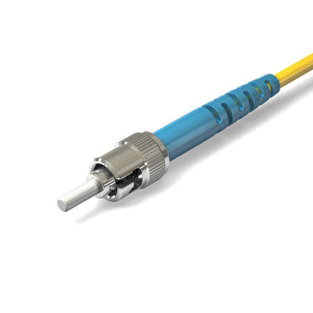
Bayonet-style fiber-optic connector with a round ferrule, used in older fiber installations.

Cisco-oriented AAA protocol for authenticating administrators to network devices.
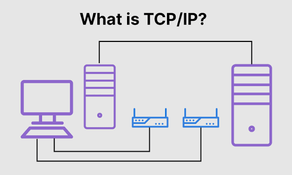
Reliable, connection-oriented transport protocol that delivers ordered, acknowledged data streams.

Legacy WPA encryption/integrity mechanism superseded by stronger AES-based Wi-Fi security.
Fast, inexpensive LCD panel type with narrower viewing angles than IPS or VA.
.png)
OTP algorithm that generates rotating codes based on the current time and a shared secret.
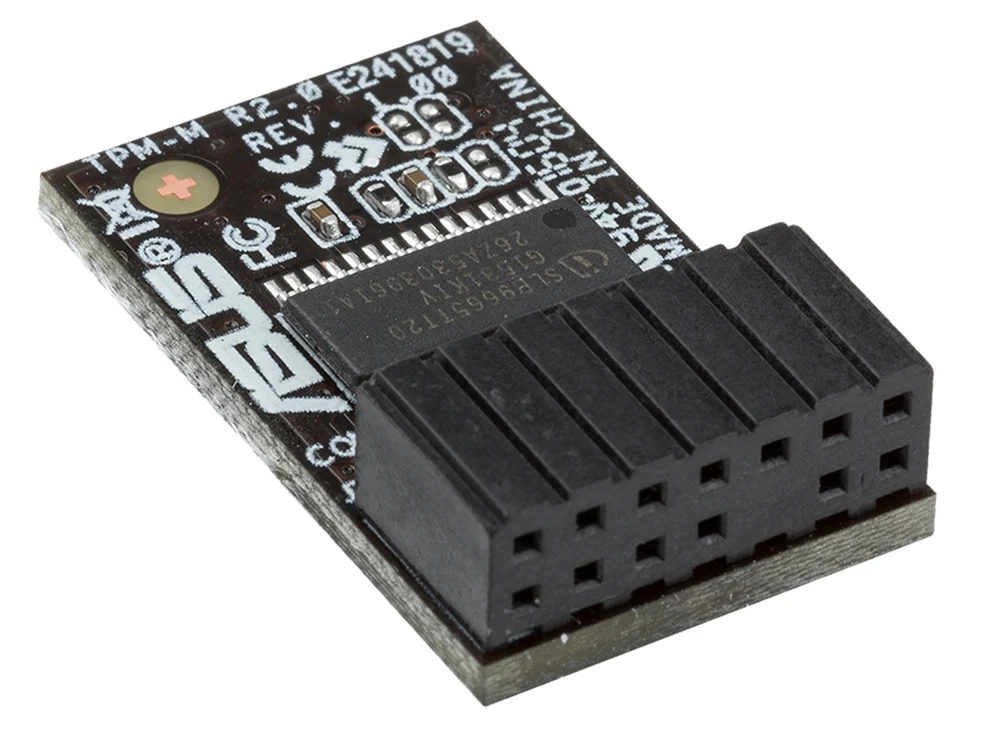
Secure cryptoprocessor chip that stores keys and supports features like BitLocker and measured boot.
DNS record type that stores arbitrary text, often used for SPF, DKIM, and domain verification.
29 exam acronyms starting with letters U–Z.
Windows security prompt that asks for elevation before allowing administrative actions.
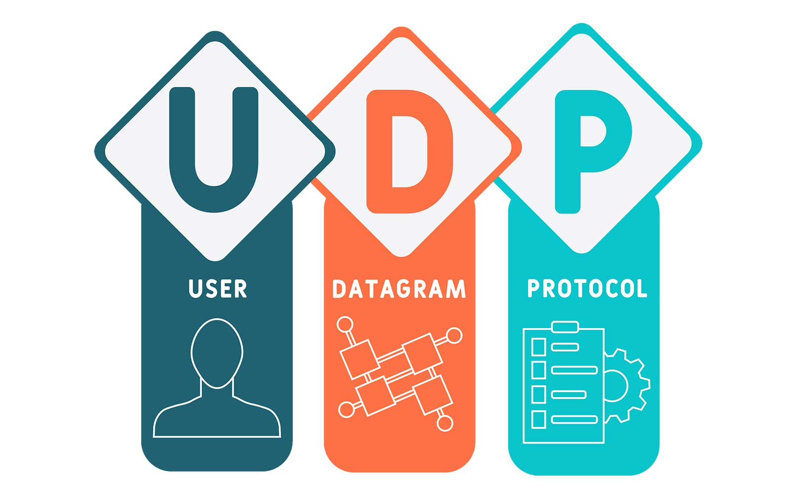
Connectionless transport protocol used for fast, lightweight traffic such as DNS and streaming.

Modern firmware interface that replaces legacy BIOS with faster boot, GUI setup, and Secure Boot.
Protocol that lets devices automatically open router ports; convenient but often a security risk.
Battery-backed power device that keeps equipment running during outages and smooths power issues.

Hot-pluggable interface for connecting peripherals, storage, and chargers to computers.
Reversible USB connector supporting data, video, and high-wattage power delivery.
Security appliance that combines firewall, IDS/IPS, antivirus, and related protections in one box.
LCD panel technology with strong contrast, sitting between TN and IPS in viewing-angle performance.
Architecture that hosts user desktops as VMs in a data center and streams them to thin clients.
Legacy analog video connector and resolution standard historically used for PC monitors.

Logical network segment created on switches to isolate broadcast domains without separate physical cabling.
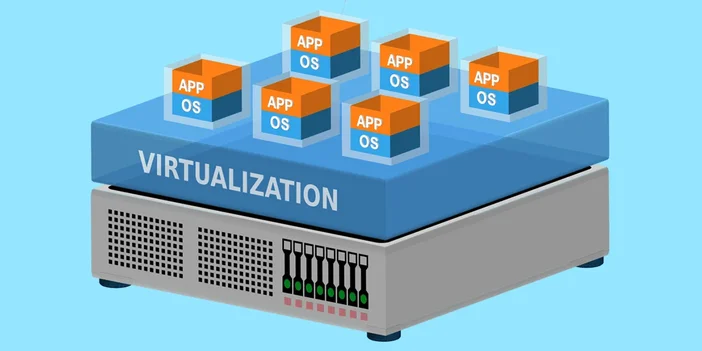
Software-emulated computer running an OS and apps on a hypervisor alongside other VMs.

Cross-platform remote desktop technology that shares a graphical desktop over the RFB protocol.

Technology that carries voice calls as data packets over IP networks instead of traditional phone lines.
Encrypted tunnel that securely connects a remote client or site to a private network over the internet.
Memory used by a GPU to store textures, framebuffers, and other graphics data.
Network spanning large geographic areas, typically connecting multiple sites over ISP links.
Device that bridges wireless clients onto a wired network (often used interchangeably with AP).
Obsolete Wi-Fi security protocol that is easily cracked and must not be used.
Microsoft service that enables remote PowerShell and management commands without a full desktop session.
Provider of internet service (exam acronym expansion); in practice often refers to wireless ISPs serving rural areas.
Local network that uses Wi-Fi radio instead of (or in addition to) Ethernet cabling.

Family of Wi-Fi security standards (WPA/WPA2/WPA3) that encrypt and authenticate wireless traffic.
Wide-area wireless connectivity such as cellular (LTE/5G) for mobile internet access.
Broad term for delivering almost any IT capability as a cloud subscription service.
.jpg)
Security approach that correlates threat data across endpoints, email, cloud, and network for detection.

High-performance journaling file system commonly used on Linux for large volumes.
.jpg)
Web attack that injects malicious scripts into pages viewed by other users to steal data or hijack sessions.